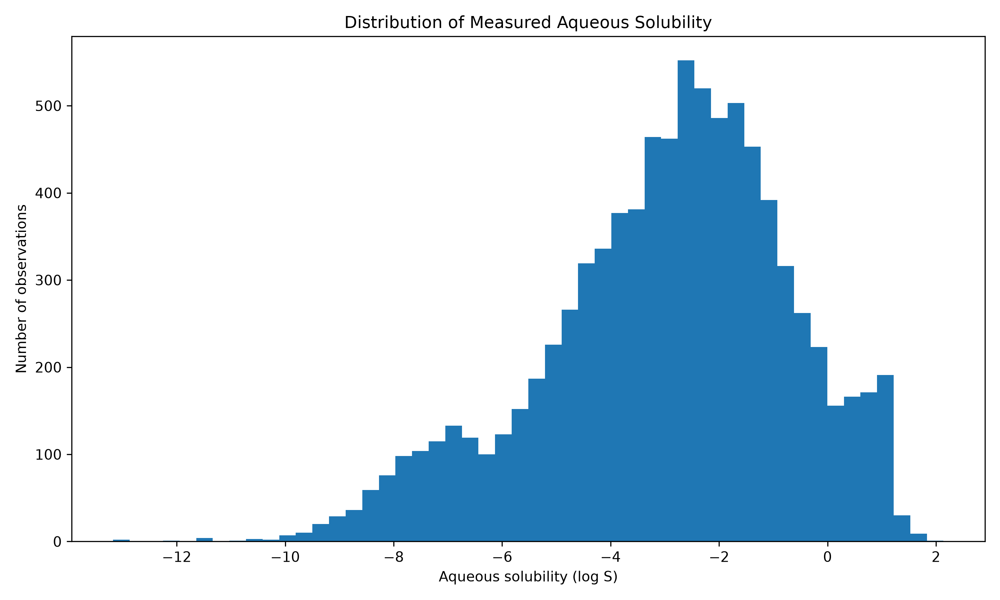
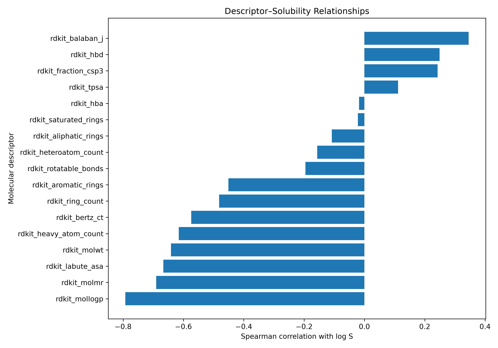
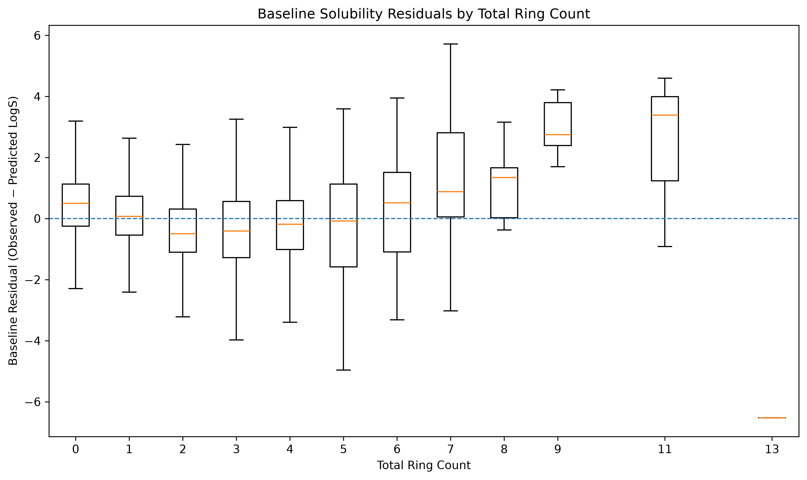
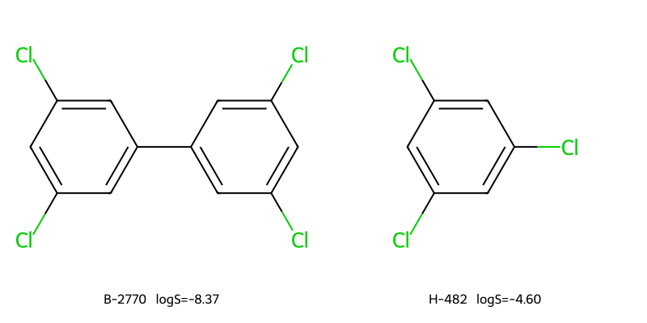
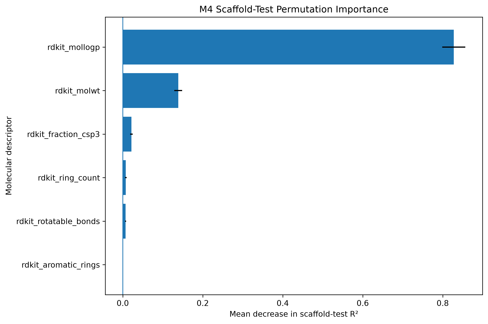

Aqueous Solubility
Prediction
Can a machine-learning model predict how well a molecule dissolves in water — and, more importantly, can we tell when that prediction should be trusted?
Can we predict a molecule's solubility from its structure?
Solubility describes how readily a substance dissolves in water. It matters in areas ranging from pharmaceutical development to environmental chemistry because a molecule's behaviour in water can influence how it is formulated, transported, absorbed, or detected.
The basic idea behind this project is straightforward: molecules have measurable structural and physical characteristics, and those characteristics may contain enough information for a machine-learning model to estimate aqueous solubility.
But producing a prediction is only part of the problem. A model can perform well on familiar molecules while performing much worse on chemistry it has not seen before.
The project therefore asks two questions: how accurately can solubility be predicted, and how reliable are those predictions when the chemistry changes?
That second question shaped the analysis. Predictive performance, generalisation, calibration, chemical-space familiarity, and explainability were treated as important outcomes rather than reporting a single model score and stopping there.
A public chemistry dataset, turned into a controlled analytical population
Curated observations from AqSolDB, a public database containing experimentally measured aqueous solubility information.
A defined modelling population of single-component, metal-free, neutral compounds used consistently throughout the analysis.
Six interpretable numerical descriptions of molecular structure and properties, generated from the molecular records.


From chemical records to a reliability-audited model
The project was built as a reproducible analytical workflow. The model is one component of a larger system covering data preparation, molecular feature generation, validation, error analysis, and interpretation.
Does the model actually generalise?
A model can appear highly accurate if the test data closely resembles the data it was trained on. For molecular data, that is an important risk because chemically related molecules can be very similar in structure and properties.
Why the split matters
The usual way to evaluate a machine-learning model is to divide the dataset into training and test sets, train the model on one part, and measure its predictions on the other.
That works well when the observations are reasonably independent. Molecules are different. A dataset can contain families of compounds that share much of the same underlying structure. If closely related molecules appear in both the training and test sets, the evaluation can become easier than the real prediction problem.
In practice, this can make a model look better at predicting new molecules than it really is.
Scaffold-aware validation
Instead of treating every molecule as an unrelated observation, compounds were grouped according to their underlying structural frameworks. Related structures were therefore kept together when constructing the validation sets.
This creates a more demanding test: the model has to make predictions for molecular structures that are more separated from the structures available during training.
Separate related chemistry
Structural families are kept together rather than being randomly scattered across training and test data.
Train on one chemical landscape
The model learns relationships between molecular descriptors and measured aqueous solubility from the training compounds.
Test on separated structures
Predictions are evaluated on compounds whose structural families were not used to train that particular model.
Repeat the experiment
The process was repeated across 10 validation runs to determine whether the observed model advantage was consistent rather than dependent on one particular split.
The nonlinear model remained ahead.
Across all 10 repeated scaffold-aware validation runs, the Gradient Boosting model outperformed the linear baseline. The overall result was an R² of 0.7376, compared with 0.6632 for the linear model.
The improvement of 0.0744 R² suggests that the relationship between molecular structure and aqueous solubility is not adequately described by a simple linear relationship. The nonlinear model was able to capture additional structure in the relationship between the molecular descriptors and the target.
This result provides stronger evidence of generalisation than a single random train/test split, because the evaluation deliberately separates related molecular structures. It does not mean that the model will predict every new molecule accurately. Performance can still vary substantially depending on how similar a new compound is to the chemistry represented during training.
That limitation leads to the next question: how does prediction reliability change as a molecule moves further away from the chemistry the model has seen?
The nonlinear model captured more of the observed solubility variation
Under the project's validation framework, the Gradient Boosting model explained more of the variation in measured solubility than the simpler linear baseline.
Good average performance does not mean every prediction is equally reliable
Looking beyond R² reveals an important limitation: the model does not reproduce the full range of observed solubility values equally well.
Very low measured solubility values tend to be predicted as somewhat less extreme, while very high measured values tend to be predicted as somewhat less high.
In other words, the model generally gets the direction of change right, but its predictions are pulled toward the middle of the observed range.

The model does not make the same size or type of mistake for every molecule. Examining residuals against structural characteristics helps identify where prediction errors become more concentrated.
Ring complexity is one structural characteristic examined in the analysis. The relationship should not be interpreted as evidence that ring count alone causes prediction error. Instead, it provides a useful diagnostic for investigating how model behaviour changes across different parts of chemical space.

When should we trust the prediction?
A model can have good average performance and still produce unreliable predictions for particular compounds. The important question is not only how accurate the model is overall, but whether a new molecule resembles the chemistry from which the model learned.
A model cannot learn every kind of chemistry
The training data defines the chemical world the model has experience with. Some new molecules may sit close to that experience, while others may be structurally very different.
A prediction for a familiar type of molecule is therefore not the same kind of prediction as one made for a molecule occupying a much less represented part of chemical space.
This is the purpose of an applicability domain: to describe where the model has meaningful support from the chemistry represented in its training data.
Chemical-space distance
Each compound was evaluated according to how far its molecular descriptor profile was from the chemistry available to the model during training.
Greater distance indicates greater chemical novelty relative to that training set. It does not automatically mean that a prediction is wrong — it indicates that the model is operating with less directly similar training experience.
What the pattern means
The compounds furthest from the training chemistry showed larger prediction errors than compounds closer to it. This provides evidence that chemical novelty is associated with reduced predictive reliability in this dataset.
Put simply: the model generally performed better when it was working within chemistry that looked more familiar to it.
This is an important distinction from simply reporting one overall accuracy score. Two compounds can receive predictions from the same model, while the evidence supporting those predictions is very different.
What applicability domain does not mean
A high-novelty compound is not automatically a bad prediction, and a low-novelty compound is not guaranteed to be accurate.
The analysis identifies a group-level relationship: prediction error increased as chemical novelty increased. It is therefore better interpreted as a warning about expected reliability than as a mechanism for declaring individual predictions correct or incorrect.
The test compounds were not used to define their own novelty.
Applicability-domain distances were calculated separately within each scaffold-aware validation repetition, using only the compounds available in that repetition's training set as the reference chemical space.
This matters because using the complete dataset to define chemical novelty would allow information from the test compounds to influence the analysis of their own predictions. The fold-specific approach keeps the reliability analysis aligned with the same separation used to evaluate model performance.
In a real scientific or operational setting, a prediction is more useful when its limitations are visible. Applicability-domain analysis does not make the model universally reliable; it provides additional evidence about where its historical training experience is strongest and where greater caution may be appropriate.
Combined with calibration, residual analysis, and explainability, this turns the model from a single performance number into a more complete picture of prediction reliability.
What characteristics of a molecule does the model rely on?
Knowing that a model predicts well is useful. Understanding what it is responding to is better.
The project therefore examined the relationship between the model's predictions and the molecular characteristics supplied to it.
Two complementary approaches — SHAP and permutation importance — were used to investigate which descriptors had the greatest influence on model behaviour.
Across these analyses, MolLogP and MolWt emerged as the dominant descriptors.
MolLogP is related to how a molecule tends to distribute between water and a non-water-like environment, while MolWt describes molecular weight. Their importance is consistent with the broader chemical intuition that both molecular size and how a molecule interacts with water can influence solubility.
This does not mean either descriptor alone determines solubility. The model uses the descriptors together, and the importance analysis describes model behaviour rather than proving a causal relationship.

An analytical system around the model
The main output of the project is not simply a trained model. It is a reproducible workflow for taking scientific data from raw records to an evaluated and interpretable prediction system.
Scientific data layer
Structured the source data into a PostgreSQL-backed analytical layer, separating compound information, solubility measurements, and molecular descriptors.
Molecular representation
Converted molecular information into a small set of interpretable numerical descriptors using RDKit, creating features that could be analysed by conventional machine-learning methods.
Predictive modelling
Compared a simple linear baseline with a nonlinear Gradient Boosting model using the same controlled validation framework.
Model reliability
Extended evaluation beyond predictive performance with calibration, residual analysis, applicability-domain assessment, and model explainability.
What this analysis cannot establish
- AqSolDB is a public scientific benchmark rather than an operational or proprietary dataset. Results should therefore be interpreted in the context of this dataset.
- Scaffold-aware validation provides a more demanding estimate of structural generalisation, but it is still internal validation and does not constitute independent external validation.
- Applicability-domain distance is associated with prediction error magnitude at the group level. It does not reliably determine the direction of an individual prediction error.
- The descriptor set deliberately prioritises interpretability. More complex molecular representations could capture information that these six descriptors do not.
- The model should therefore be treated as an analytical prediction tool and not as a substitute for experimental measurement.
A useful model is not necessarily a universally reliable model.
Explore the implementation
The complete project contains the data-ingestion workflow, analytical data layer, molecular descriptor generation, modelling pipeline, scaffold-aware validation, applicability-domain analysis, explainability work, and supporting documentation.
The repository provides the technical detail behind the conclusions presented here, including the code and analytical workflow used to produce the results.